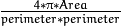

Common Interfaces of Feature Detectors¶
Feature detectors in OpenCV have wrappers with a common interface that enables you to easily switch
between different algorithms solving the same problem. All objects that implement keypoint detectors
inherit the
FeatureDetector interface.
Note
- An example explaining keypoint detection can be found at opencv_source_code/samples/cpp/descriptor_extractor_matcher.cpp
KeyPoint¶
-
class
KeyPoint¶ Data structure for salient point detectors.
-
Point2f
pt¶ coordinates of the keypoint
-
float
size¶ diameter of the meaningful keypoint neighborhood
-
float
angle¶ computed orientation of the keypoint (-1 if not applicable). Its possible values are in a range [0,360) degrees. It is measured relative to image coordinate system (y-axis is directed downward), ie in clockwise.
-
float
response¶ the response by which the most strong keypoints have been selected. Can be used for further sorting or subsampling
-
int
octave¶ octave (pyramid layer) from which the keypoint has been extracted
-
int
class_id¶ object id that can be used to clustered keypoints by an object they belong to
-
Point2f
KeyPoint::KeyPoint¶
The keypoint constructors
-
C++:
KeyPoint::KeyPoint()¶
-
C++:
KeyPoint::KeyPoint(Point2f _pt, float _size, float _angle=-1, float _response=0, int _octave=0, int _class_id=-1)¶
-
C++:
KeyPoint::KeyPoint(float x, float y, float _size, float _angle=-1, float _response=0, int _octave=0, int _class_id=-1)¶
-
Python:
cv2.KeyPoint([x, y, _size[, _angle[, _response[, _octave[, _class_id]]]]]) → <KeyPoint object>¶ Parameters: - x – x-coordinate of the keypoint
- y – y-coordinate of the keypoint
- _pt – x & y coordinates of the keypoint
- _size – keypoint diameter
- _angle – keypoint orientation
- _response – keypoint detector response on the keypoint (that is, strength of the keypoint)
- _octave – pyramid octave in which the keypoint has been detected
- _class_id – object id
FeatureDetector¶
-
class
FeatureDetector: publicAlgorithm¶
Abstract base class for 2D image feature detectors.
class CV_EXPORTS FeatureDetector
{
public:
virtual ~FeatureDetector();
void detect( const Mat& image, vector<KeyPoint>& keypoints,
const Mat& mask=Mat() ) const;
void detect( const vector<Mat>& images,
vector<vector<KeyPoint> >& keypoints,
const vector<Mat>& masks=vector<Mat>() ) const;
virtual void read(const FileNode&);
virtual void write(FileStorage&) const;
static Ptr<FeatureDetector> create( const string& detectorType );
protected:
...
};
FeatureDetector::detect¶
Detects keypoints in an image (first variant) or image set (second variant).
-
C++:
FeatureDetector::detect(const Mat& image, vector<KeyPoint>& keypoints, const Mat& mask=Mat() )const¶
-
C++:
FeatureDetector::detect(const vector<Mat>& images, vector<vector<KeyPoint>>& keypoints, const vector<Mat>& masks=vector<Mat>() )const¶ Parameters: - image – Image.
- images – Image set.
- keypoints – The detected keypoints. In the second variant of the method
keypoints[i]is a set of keypoints detected inimages[i]. - mask – Mask specifying where to look for keypoints (optional). It must be a 8-bit integer matrix with non-zero values in the region of interest.
- masks – Masks for each input image specifying where to look for keypoints (optional).
masks[i]is a mask forimages[i].
FeatureDetector::create¶
Creates a feature detector by its name.
-
C++:
FeatureDetector::create(const string& detectorType)¶ Parameters: - detectorType – Feature detector type.
The following detector types are supported:
"FAST"–FastFeatureDetector"STAR"–StarFeatureDetector"SIFT"–SIFT(nonfree module)"SURF"–SURF(nonfree module)"ORB"–ORB"BRISK"–BRISK"MSER"–MSER"GFTT"–GoodFeaturesToTrackDetector"HARRIS"–GoodFeaturesToTrackDetectorwith Harris detector enabled"Dense"–DenseFeatureDetector"SimpleBlob"–SimpleBlobDetector
Also a combined format is supported: feature detector adapter name ( "Grid" –
GridAdaptedFeatureDetector, "Pyramid" –
PyramidAdaptedFeatureDetector ) + feature detector name (see above),
for example: "GridFAST", "PyramidSTAR" .
Note
When using the SIFT and SURF detector types be sure to add the following lines to your code
- Add an extra include: #include <opencv2/nonfree/nonfree.hpp>
- Add an initialisation function at the start of your code: initModule_nonfree();
FastFeatureDetector¶
-
class
FastFeatureDetector: publicFeatureDetector¶
Wrapping class for feature detection using the
FAST() method.
class FastFeatureDetector : public FeatureDetector
{
public:
FastFeatureDetector( int threshold=1, bool nonmaxSuppression=true, type=FastFeatureDetector::TYPE_9_16 );
virtual void read( const FileNode& fn );
virtual void write( FileStorage& fs ) const;
protected:
...
};
GoodFeaturesToTrackDetector¶
-
class
GoodFeaturesToTrackDetector: publicFeatureDetector¶
Wrapping class for feature detection using the
goodFeaturesToTrack() function.
class GoodFeaturesToTrackDetector : public FeatureDetector
{
public:
class Params
{
public:
Params( int maxCorners=1000, double qualityLevel=0.01,
double minDistance=1., int blockSize=3,
bool useHarrisDetector=false, double k=0.04 );
void read( const FileNode& fn );
void write( FileStorage& fs ) const;
int maxCorners;
double qualityLevel;
double minDistance;
int blockSize;
bool useHarrisDetector;
double k;
};
GoodFeaturesToTrackDetector( const GoodFeaturesToTrackDetector::Params& params=
GoodFeaturesToTrackDetector::Params() );
GoodFeaturesToTrackDetector( int maxCorners, double qualityLevel,
double minDistance, int blockSize=3,
bool useHarrisDetector=false, double k=0.04 );
virtual void read( const FileNode& fn );
virtual void write( FileStorage& fs ) const;
protected:
...
};
MserFeatureDetector¶
-
class
MserFeatureDetector: publicFeatureDetector¶
Wrapping class for feature detection using the
MSER class.
class MserFeatureDetector : public FeatureDetector
{
public:
MserFeatureDetector( CvMSERParams params=cvMSERParams() );
MserFeatureDetector( int delta, int minArea, int maxArea,
double maxVariation, double minDiversity,
int maxEvolution, double areaThreshold,
double minMargin, int edgeBlurSize );
virtual void read( const FileNode& fn );
virtual void write( FileStorage& fs ) const;
protected:
...
};
StarFeatureDetector¶
-
class
StarFeatureDetector: publicFeatureDetector¶
The class implements the keypoint detector introduced by [Agrawal08], synonym of StarDetector.
class StarFeatureDetector : public FeatureDetector
{
public:
StarFeatureDetector( int maxSize=16, int responseThreshold=30,
int lineThresholdProjected = 10,
int lineThresholdBinarized=8, int suppressNonmaxSize=5 );
virtual void read( const FileNode& fn );
virtual void write( FileStorage& fs ) const;
protected:
...
};
| [Agrawal08] | Agrawal, M., Konolige, K., & Blas, M. R. (2008). Censure: Center surround extremas for realtime feature detection and matching. In Computer Vision–ECCV 2008 (pp. 102-115). Springer Berlin Heidelberg. |
DenseFeatureDetector¶
-
class
DenseFeatureDetector: publicFeatureDetector¶
Class for generation of image features which are distributed densely and regularly over the image.
class DenseFeatureDetector : public FeatureDetector
{
public:
DenseFeatureDetector( float initFeatureScale=1.f, int featureScaleLevels=1,
float featureScaleMul=0.1f,
int initXyStep=6, int initImgBound=0,
bool varyXyStepWithScale=true,
bool varyImgBoundWithScale=false );
protected:
...
};
The detector generates several levels (in the amount of featureScaleLevels) of features. Features of each level are located in the nodes of a regular grid over the image (excluding the image boundary of given size). The level parameters (a feature scale, a node size, a size of boundary) are multiplied by featureScaleMul with level index growing depending on input flags, viz.:
- Feature scale is multiplied always.
- The grid node size is multiplied if
varyXyStepWithScaleistrue. - Size of image boundary is multiplied if
varyImgBoundWithScaleistrue.
SimpleBlobDetector¶
-
class
SimpleBlobDetector: publicFeatureDetector¶
Class for extracting blobs from an image.
class SimpleBlobDetector : public FeatureDetector
{
public:
struct Params
{
Params();
float thresholdStep;
float minThreshold;
float maxThreshold;
size_t minRepeatability;
float minDistBetweenBlobs;
bool filterByColor;
uchar blobColor;
bool filterByArea;
float minArea, maxArea;
bool filterByCircularity;
float minCircularity, maxCircularity;
bool filterByInertia;
float minInertiaRatio, maxInertiaRatio;
bool filterByConvexity;
float minConvexity, maxConvexity;
};
SimpleBlobDetector(const SimpleBlobDetector::Params ¶meters = SimpleBlobDetector::Params());
protected:
...
};
The class implements a simple algorithm for extracting blobs from an image:
- Convert the source image to binary images by applying thresholding with several thresholds from
minThreshold(inclusive) tomaxThreshold(exclusive) with distancethresholdStepbetween neighboring thresholds. - Extract connected components from every binary image by
findContours()and calculate their centers. - Group centers from several binary images by their coordinates. Close centers form one group that corresponds to one blob, which is controlled by the
minDistBetweenBlobsparameter. - From the groups, estimate final centers of blobs and their radiuses and return as locations and sizes of keypoints.
This class performs several filtrations of returned blobs. You should set filterBy* to true/false to turn on/off corresponding filtration. Available filtrations:
- By color. This filter compares the intensity of a binary image at the center of a blob to
blobColor. If they differ, the blob is filtered out. UseblobColor = 0to extract dark blobs andblobColor = 255to extract light blobs.- By area. Extracted blobs have an area between
minArea(inclusive) andmaxArea(exclusive).- By circularity. Extracted blobs have circularity () between
minCircularity(inclusive) andmaxCircularity(exclusive).- By ratio of the minimum inertia to maximum inertia. Extracted blobs have this ratio between
minInertiaRatio(inclusive) andmaxInertiaRatio(exclusive).- By convexity. Extracted blobs have convexity (area / area of blob convex hull) between
minConvexity(inclusive) andmaxConvexity(exclusive).
Default values of parameters are tuned to extract dark circular blobs.
GridAdaptedFeatureDetector¶
-
class
GridAdaptedFeatureDetector: publicFeatureDetector¶
Class adapting a detector to partition the source image into a grid and detect points in each cell.
class GridAdaptedFeatureDetector : public FeatureDetector
{
public:
/*
* detector Detector that will be adapted.
* maxTotalKeypoints Maximum count of keypoints detected on the image.
* Only the strongest keypoints will be kept.
* gridRows Grid row count.
* gridCols Grid column count.
*/
GridAdaptedFeatureDetector( const Ptr<FeatureDetector>& detector,
int maxTotalKeypoints, int gridRows=4,
int gridCols=4 );
virtual void read( const FileNode& fn );
virtual void write( FileStorage& fs ) const;
protected:
...
};
PyramidAdaptedFeatureDetector¶
-
class
PyramidAdaptedFeatureDetector: publicFeatureDetector¶
Class adapting a detector to detect points over multiple levels of a Gaussian pyramid. Consider using this class for detectors that are not inherently scaled.
class PyramidAdaptedFeatureDetector : public FeatureDetector
{
public:
PyramidAdaptedFeatureDetector( const Ptr<FeatureDetector>& detector,
int levels=2 );
virtual void read( const FileNode& fn );
virtual void write( FileStorage& fs ) const;
protected:
...
};
DynamicAdaptedFeatureDetector¶
-
class
DynamicAdaptedFeatureDetector: publicFeatureDetector¶
Adaptively adjusting detector that iteratively detects features until the desired number is found.
class DynamicAdaptedFeatureDetector: public FeatureDetector
{
public:
DynamicAdaptedFeatureDetector( const Ptr<AdjusterAdapter>& adjuster,
int min_features=400, int max_features=500, int max_iters=5 );
...
};
If the detector is persisted, it “remembers” the parameters used for the last detection. In this case, the detector may be used for consistent numbers of keypoints in a set of temporally related images, such as video streams or panorama series.
DynamicAdaptedFeatureDetector uses another detector, such as FAST or SURF, to do the dirty work,
with the help of AdjusterAdapter .
If the detected number of features is not large enough,
AdjusterAdapter adjusts the detection parameters so that the next detection
results in a bigger or smaller number of features. This is repeated until either the number of desired features are found
or the parameters are maxed out.
Adapters can be easily implemented for any detector via the
AdjusterAdapter interface.
Beware that this is not thread-safe since the adjustment of parameters requires modification of the feature detector class instance.
Example of creating DynamicAdaptedFeatureDetector :
//sample usage:
//will create a detector that attempts to find
//100 - 110 FAST Keypoints, and will at most run
//FAST feature detection 10 times until that
//number of keypoints are found
Ptr<FeatureDetector> detector(new DynamicAdaptedFeatureDetector (100, 110, 10,
new FastAdjuster(20,true)));
DynamicAdaptedFeatureDetector::DynamicAdaptedFeatureDetector¶
The constructor
-
C++:
DynamicAdaptedFeatureDetector::DynamicAdaptedFeatureDetector(const Ptr<AdjusterAdapter>& adjuster, int min_features=400, int max_features=500, int max_iters=5 )¶ Parameters: - adjuster –
AdjusterAdapterthat detects features and adjusts parameters. - min_features – Minimum desired number of features.
- max_features – Maximum desired number of features.
- max_iters – Maximum number of times to try adjusting the feature detector parameters. For
FastAdjuster, this number can be high, but withStarorSurfmany iterations can be time-consuming. At each iteration the detector is rerun.
- adjuster –
AdjusterAdapter¶
-
class
AdjusterAdapter: publicFeatureDetector¶
Class providing an interface for adjusting parameters of a feature detector. This interface is used by DynamicAdaptedFeatureDetector . It is a wrapper for FeatureDetector that enables adjusting parameters after feature detection.
class AdjusterAdapter: public FeatureDetector
{
public:
virtual ~AdjusterAdapter() {}
virtual void tooFew(int min, int n_detected) = 0;
virtual void tooMany(int max, int n_detected) = 0;
virtual bool good() const = 0;
virtual Ptr<AdjusterAdapter> clone() const = 0;
static Ptr<AdjusterAdapter> create( const string& detectorType );
};
See
FastAdjuster,
StarAdjuster, and
SurfAdjuster for concrete implementations.
AdjusterAdapter::tooFew¶
Adjusts the detector parameters to detect more features.
-
C++:
AdjusterAdapter::tooFew(int min, int n_detected)¶ Parameters: - min – Minimum desired number of features.
- n_detected – Number of features detected during the latest run.
Example:
void FastAdjuster::tooFew(int min, int n_detected)
{
thresh_--;
}
AdjusterAdapter::tooMany¶
Adjusts the detector parameters to detect less features.
-
C++:
AdjusterAdapter::tooMany(int max, int n_detected)¶ Parameters: - max – Maximum desired number of features.
- n_detected – Number of features detected during the latest run.
Example:
void FastAdjuster::tooMany(int min, int n_detected)
{
thresh_++;
}
AdjusterAdapter::good¶
Returns false if the detector parameters cannot be adjusted any more.
-
C++:
AdjusterAdapter::good()const¶
Example:
bool FastAdjuster::good() const
{
return (thresh_ > 1) && (thresh_ < 200);
}
AdjusterAdapter::create¶
Creates an adjuster adapter by name
-
C++:
AdjusterAdapter::create(const string& detectorType)¶ Creates an adjuster adapter by name
detectorType. The detector name is the same as inFeatureDetector::create(), but now supports"FAST","STAR", and"SURF"only.
FastAdjuster¶
-
class
FastAdjuster: publicAdjusterAdapter¶
AdjusterAdapter for FastFeatureDetector. This class decreases or increases the threshold value by 1.
class FastAdjuster FastAdjuster: public AdjusterAdapter
{
public:
FastAdjuster(int init_thresh = 20, bool nonmax = true);
...
};
StarAdjuster¶
-
class
StarAdjuster: publicAdjusterAdapter¶
AdjusterAdapter for StarFeatureDetector. This class adjusts the responseThreshhold of StarFeatureDetector.
class StarAdjuster: public AdjusterAdapter
{
StarAdjuster(double initial_thresh = 30.0);
...
};
SurfAdjuster¶
-
class
SurfAdjuster: publicAdjusterAdapter¶
AdjusterAdapter for SurfFeatureDetector.
class CV_EXPORTS SurfAdjuster: public AdjusterAdapter
{
public:
SurfAdjuster( double initial_thresh=400.f, double min_thresh=2, double max_thresh=1000 );
virtual void tooFew(int minv, int n_detected);
virtual void tooMany(int maxv, int n_detected);
virtual bool good() const;
virtual Ptr<AdjusterAdapter> clone() const;
...
};
Help and Feedback
You did not find what you were looking for?- Ask a question on the Q&A forum.
- If you think something is missing or wrong in the documentation, please file a bug report.

Table Of Contents
- Common Interfaces of Feature Detectors
- KeyPoint
- KeyPoint::KeyPoint
- FeatureDetector
- FeatureDetector::detect
- FeatureDetector::create
- FastFeatureDetector
- GoodFeaturesToTrackDetector
- MserFeatureDetector
- StarFeatureDetector
- DenseFeatureDetector
- SimpleBlobDetector
- GridAdaptedFeatureDetector
- PyramidAdaptedFeatureDetector
- DynamicAdaptedFeatureDetector
- DynamicAdaptedFeatureDetector::DynamicAdaptedFeatureDetector
- AdjusterAdapter
- AdjusterAdapter::tooFew
- AdjusterAdapter::tooMany
- AdjusterAdapter::good
- AdjusterAdapter::create
- FastAdjuster
- StarAdjuster
- SurfAdjuster
Previous topic
Feature Detection and Description
Next topic
Common Interfaces of Descriptor Extractors